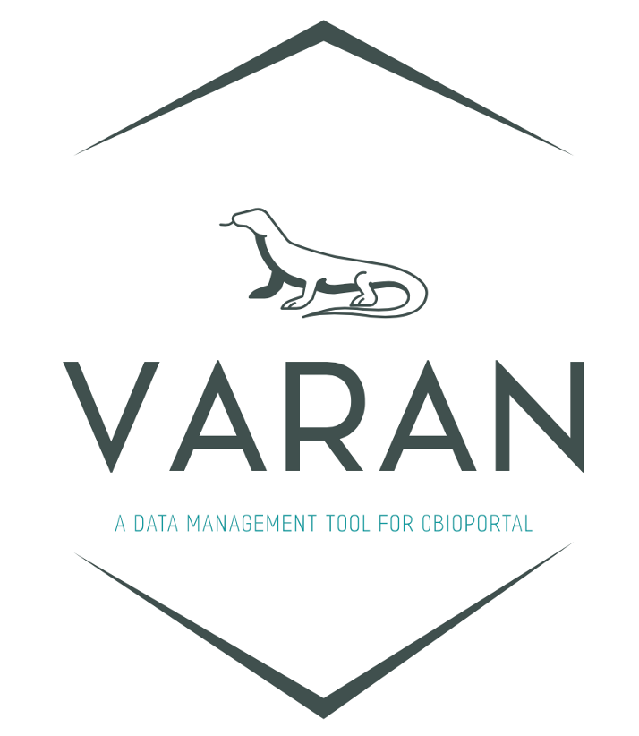

Overview
Varan is a Python-based application that provides a pipeline to automatically prepare and manipulate cancer genomics data in the specific format supported by the cBioPortal.
Features
- Study Creation: This section generates a well-structured and validated study folder starting from raw VCF files, ready to be uploaded into the local instance of cBioPortal.
- Study Manipulation: This section allows users to work with existing studies, including merging two studies or modifying a study by extracting/removing samples.
Quick Start
Quickly deploy Varan from raw data to launching analysis pipelines in under 30 minutes using a Docker container.
User Guide
The user guide provides an in-depth description of Varan's usage, detailing specific functions, workflows, and use cases.
Issue Reporting
If you encounter any issues while running a command and cannot find a solution in the documentation, feel free to open an issue on GitHub. We will do our best to respond as soon as possible.
Citing Varan
If you wish to cite Varan in your work, please use the following DOI: https://zenodo.org/doi/10.5281/zenodo.12806060